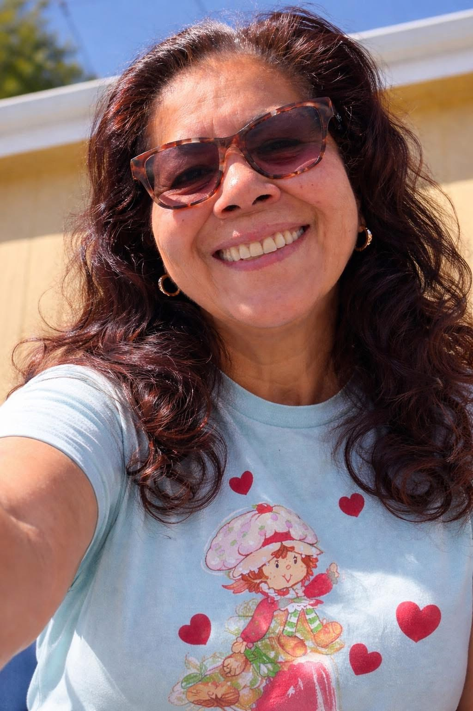

Family Legacy Profile
Santa Maria, California — Central Coast born and raised. Mother. Sister. Daughter of the Garcia line.
Her Story
Debbie Garcia was born and raised on the Central Coast of California — the youngest generation of a Garcia family that put down deep roots in Santa Maria and never left. Her grandmother Elvira, born September 7, 1944, was the youngest of 18 children raised by Francisco and Clara Garcia in Sinton, Texas before the family made their way west.
Debbie grew up surrounded by family — cousins, aunts, uncles, the whole Garcia tree gathered under one sky. That's the kind of upbringing that shapes a person. She carried that warmth into everything she built: her family, her community, her son.
She is the mother of Mark "Bear" Vázquez — founder of My Legacy Continues — and the living link between the Garcia and Vázquez lines on the Central Coast.
Where She Comes From
The Garcia family traces back to Faustino Montemayor, born 1852 in Texas, who lived 98 years and saw the entire arc of Mexican-American history in the Southwest. His granddaughter Clara married Francisco Garcia and together they raised 18 children — a family so large the 1940 US Census recorded them all in Sinton, Texas.
Elvira "Barbara" Garcia — Debbie's mother and Bear's grandmother — was the youngest of those 18. Born September 7, 1944, she eventually married John Garcia and raised her family on the Central Coast. That line runs straight through Debbie and into Bear.
The Garcia name itself carries Basque-Galician roots — some linguists trace it to the Basque word for "bear." Bear Vázquez carries both names in his blood.
Her People
The people who make up her world.
Connected Profiles
Every profile connects to the ones that came before and the ones that come after.